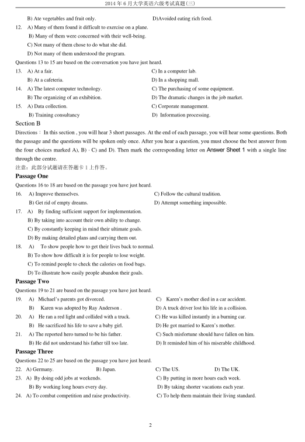
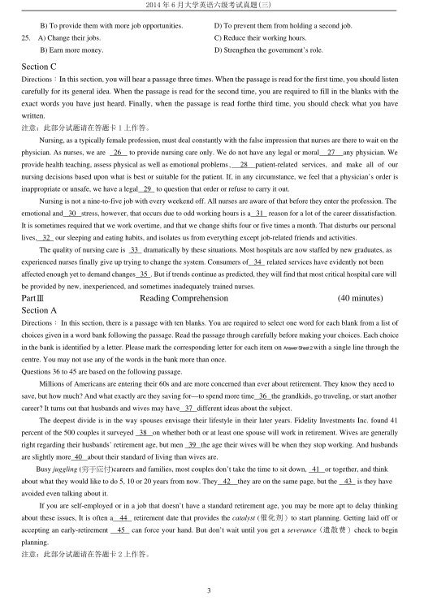
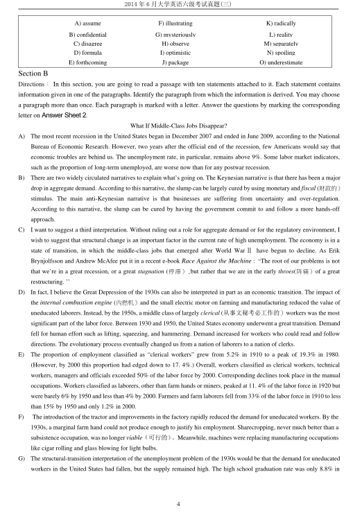
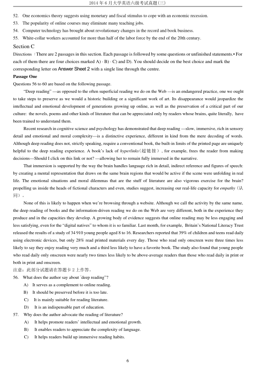
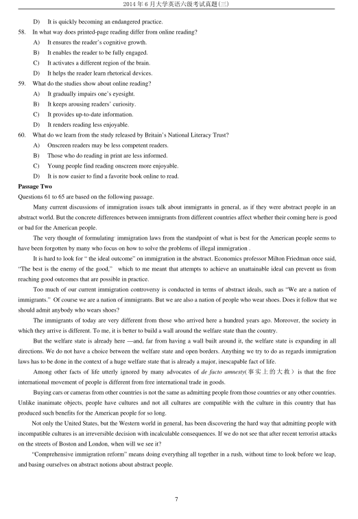

第 1 / 8 页

2014 年6 月大学英语六级考试真题(三)
1
2014 年6 月大学英语六级考试真题(三)
Part I
Writing
(30 minutes)
Directions：For this part, you are allowed 30 minutes to write an essay explaining why it is unwise to judge a person by their
appearance . You can give examples to illustrate your point. You should write at least 150 words but no more than 200
words.
注意：此部分试题请在答题卡1 上作答。
PartⅡ
Listening Comprehension
(30 minutes)
Section A
Directions：In this section, you will hear 8 short conversations and 2 long conversations. At the end of each conversation,
one or more questions will be asked about what was said. Both the conversation and the questions will be spoken only once.
After each question there will be a pause. During the pause, you must read the four choices marked A), B), C) and D), and
decide which is the best answer. Then mark the corresponding letter on Answer Sheet 1 with a single line through the
centre.
注意：此部分试题请在答题卡1 上作答。
1.
A) Surfing the net.
C) Packing a birthday gift.
B) Watching a talk show.
D) Shopping at a jewelry store.
2.
A)
He enjoys finding fault with exams.
B) He is sure of his success in the exam.
C) He doesn’t know if he can do well in the exam.
D) He used to get straight A’s in the exams he took.
3. A)
The man is generous with his good comments on people.
B) The woman is unsure if there will be peace in the world.
C) The woman is doubtful about newspaper stories.
D) The man is quite optimistic about human nature.
4.
A) Study for some profession.
C) Stay in business.
B) Attend a medical school.
D) Sell his shop.
5.
A) More money.
C) A college education.
B) Fair treatment.
D) Shorter work hours.
6.
A) She was exhausted from her trip.
C) She was impressed by Mexican food.
B) She missed the comforts of home.
D) She will not go to Mexico again.
7.
A) Cheer herself up a bit.
C) Seek professional advice.
B) Find a more suitable job.
D) Take a psychology course.
8. A) He dresses more formally now.
C) He has ignored his friends since graduation.
B) What he wears does not match his position.
D) He failed to do well at college.
Questions 9 to 12 are based on the conversation you have just heard.
9.
A) To go sightseeing.
C)
To promote a new champagne.
B) To have meetings.
D)
To join in a training program.
10. A) It can reduce the number of passenger complaints.
B) It can make air travel more entertaining.
C) It can cut down the expenses for air travel.
D) It can lessen the discomfort caused by air travel.
11. A) Took balanced meals with champagne.
C)
Refrained from fish or meat.
查看 / 复制本页文字
2014 年6 月大学英语六级考试真题(三) 1 2014 年6 月大学英语六级考试真题(三) Part I Writing (30 minutes) Directions：For this part, you are allowed 30 minutes to write an essay explaining why it is unwise to judge a person by their appearance . You can give examples to illustrate your point. You should write at least 150 words but no more than 200 words. 注意：此部分试题请在答题卡1 上作答。 PartⅡ Listening Comprehension (30 minutes) Section A Directions：In this section, you will hear 8 short conversations and 2 long conversations. At the end of each conversation, one or more questions will be asked about what was said. Both the conversation and the questions will be spoken only once. After each question there will be a pause. During the pause, you must read the four choices marked A), B), C) and D), and decide which is the best answer. Then mark the corresponding letter on Answer Sheet 1 with a single line through the centre. 注意：此部分试题请在答题卡1 上作答。 1. A) Surfing the net. C) Packing a birthday gift. B) Watching a talk show. D) Shopping at a jewelry store. 2. A) He enjoys finding fault with exams. B) He is sure of his success in the exam. C) He doesn’t know if he can do well in the exam. D) He used to get straight A’s in the exams he took. 3. A) The man is generous with his good comments on people. B) The woman is unsure if there will be peace in the world. C) The woman is doubtful about newspaper stories. D) The man is quite optimistic about human nature. 4. A) Study for some profession. C) Stay in business. B) Attend a medical school. D) Sell his shop. 5. A) More money. C) A college education. B) Fair treatment. D) Shorter work hours. 6. A) She was exhausted from her trip. C) She was impressed by Mexican food. B) She missed the comforts of home. D) She will not go to Mexico again. 7. A) Cheer herself up a bit. C) Seek professional advice. B) Find a more suitable job. D) Take a psychology course. 8. A) He dresses more formally now. C) He has ignored his friends since graduation. B) What he wears does not match his position. D) He failed to do well at college. Questions 9 to 12 are based on the conversation you have just heard. 9. A) To go sightseeing. C) To promote a new champagne. B) To have meetings. D) To join in a training program. 10. A) It can reduce the number of passenger complaints. B) It can make air travel more entertaining. C) It can cut down the expenses for air travel. D) It can lessen the discomfort caused by air travel. 11. A) Took balanced meals with champagne. C) Refrained from fish or meat.
第 2 / 8 页

2014 年6 月大学英语六级考试真题(三)
2
B) Ate vegetables and fruit only.
D)Avoided eating rich food.
12.
A) Many of them found it difficult to exercise on a plane.
B) Many of them were concerned with their well-being.
C) Not many of them chose to do what she did.
D) Not many of them understood the program.
Questions 13 to 15 are based on the conversation you have just heard.
13.
A) At a fair.
C) In a computer lab.
B) At a cafeteria.
D) In a shopping mall.
14.
A) The latest computer technology.
C) The purchasing of some equipment.
B) The organizing of an exhibition.
D) The dramatic changes in the job market.
15.
A) Data collection.
C) Corporate management.
B) Training consultancy
D) Information processing.
Section B
Directions：In this section , you will hear 3 short passages. At the end of each passage, you will hear some questions. Both
the passage and the questions will be spoken only once. After you hear a question, you must choose the best answer from
the four choices marked A), B)，C) and D). Then mark the corresponding letter on Answer Sheet 1 with a single line
through the centre.
注意：此部分试题请在答题卡1 上作答。
Passage One
Questions 16 to 18 are based on the passage you have just heard.
16.
A) Improve themselves.
C) Follow the cultural tradition.
B) Get rid of empty dreams.
D) Attempt something impossible.
17.
A)
By finding sufficient support for implementation.
B) By taking into account their own ability to change.
C) By constantly keeping in mind their ultimate goals.
D) By making detailed plans and carrying them out.
18.
A)
To show people how to get their lives back to normal.
B) To show how difficult it is for people to lose weight.
C) To remind people to check the calories on food bags.
D) To illustrate how easily people abandon their goals.
Passage Two
Questions 19 to 21 are based on the passage you have just heard.
19.
A) Michael’s parents got divorced.
C)
Karen’s mother died in a car accident.
B)
Karen was adopted by Ray Anderson .
D) A truck driver lost his life in a collision.
20.
A)
He ran a red light and collided with a truck.
C) He was killed instantly in a burning car.
B) He sacrificed his life to save a baby girl.
D) He got married to Karen’s mother.
21.
A) The reported hero turned to be his father.
C) Such misfortune should have fallen on him.
B) He did not understand his father till too late.
D) It reminded him of his miserable childhood.
Passage Three
Questions 22 to 25 are based on the passage you have just heard.
22. A) Germany.
B) Japan.
C) The US.
D) The UK.
23. A) By doing odd jobs at weekends.
C) By putting in more hours each week.
B) By working long hours every day.
D) By taking shorter vacations each year.
24. A) To combat competition and raise productivity.
C) To help them maintain their living standard.
查看 / 复制本页文字
2014 年6 月大学英语六级考试真题(三) 2 B) Ate vegetables and fruit only. D)Avoided eating rich food. 12. A) Many of them found it difficult to exercise on a plane. B) Many of them were concerned with their well-being. C) Not many of them chose to do what she did. D) Not many of them understood the program. Questions 13 to 15 are based on the conversation you have just heard. 13. A) At a fair. C) In a computer lab. B) At a cafeteria. D) In a shopping mall. 14. A) The latest computer technology. C) The purchasing of some equipment. B) The organizing of an exhibition. D) The dramatic changes in the job market. 15. A) Data collection. C) Corporate management. B) Training consultancy D) Information processing. Section B Directions：In this section , you will hear 3 short passages. At the end of each passage, you will hear some questions. Both the passage and the questions will be spoken only once. After you hear a question, you must choose the best answer from the four choices marked A), B)，C) and D). Then mark the corresponding letter on Answer Sheet 1 with a single line through the centre. 注意：此部分试题请在答题卡1 上作答。 Passage One Questions 16 to 18 are based on the passage you have just heard. 16. A) Improve themselves. C) Follow the cultural tradition. B) Get rid of empty dreams. D) Attempt something impossible. 17. A) By finding sufficient support for implementation. B) By taking into account their own ability to change. C) By constantly keeping in mind their ultimate goals. D) By making detailed plans and carrying them out. 18. A) To show people how to get their lives back to normal. B) To show how difficult it is for people to lose weight. C) To remind people to check the calories on food bags. D) To illustrate how easily people abandon their goals. Passage Two Questions 19 to 21 are based on the passage you have just heard. 19. A) Michael’s parents got divorced. C) Karen’s mother died in a car accident. B) Karen was adopted by Ray Anderson . D) A truck driver lost his life in a collision. 20. A) He ran a red light and collided with a truck. C) He was killed instantly in a burning car. B) He sacrificed his life to save a baby girl. D) He got married to Karen’s mother. 21. A) The reported hero turned to be his father. C) Such misfortune should have fallen on him. B) He did not understand his father till too late. D) It reminded him of his miserable childhood. Passage Three Questions 22 to 25 are based on the passage you have just heard. 22. A) Germany. B) Japan. C) The US. D) The UK. 23. A) By doing odd jobs at weekends. C) By putting in more hours each week. B) By working long hours every day. D) By taking shorter vacations each year. 24. A) To combat competition and raise productivity. C) To help them maintain their living standard.
第 3 / 8 页

2014 年6 月大学英语六级考试真题(三)
3
B) To provide them with more job opportunities.
D) To prevent them from holding a second job.
25.
A) Change their jobs.
C) Reduce their working hours.
B) Earn more money.
D) Strengthen the government’s role.
Section C
Directions：In this section, you will hear a passage three times. When the passage is read for the first time, you should listen
carefully for its general idea. When the passage is read for the second time, you are required to fill in the blanks with the
exact words you have just heard. Finally, when the passage is read forthe third time, you should check what you have
written.
注意：此部分试题请在答题卡1 上作答。
Nursing, as a typically female profession, must deal constantly with the false impression that nurses are there to wait on the
physician. As nurses, we are
26
to provide nursing care only. We do not have any legal or moral
27
any physician. We
provide health teaching, assess physical as well as emotional problems,
28
patient-related services, and make all of our
nursing decisions based upon what is best or suitable for the patient. If, in any circumstance, we feel that a physician’s order is
inappropriate or unsafe, we have a legal 29 to question that order or refuse to carry it out.
Nursing is not a nine-to-five job with every weekend off. All nurses are aware of that before they enter the profession. The
emotional and 30 stress, however, that occurs due to odd working hours is a 31 reason for a lot of the career dissatisfaction.
It is sometimes required that we work overtime, and that we change shifts four or five times a month. That disturbs our personal
lives, 32 our sleeping and eating habits, and isolates us from everything except job-related friends and activities.
The quality of nursing care is 33 dramatically by these situations. Most hospitals are now staffed by new graduates, as
experienced nurses finally give up trying to change the system. Consumers of 34 related services have evidently not been
affected enough yet to demand changes 35 . But if trends continue as predicted, they will find that most critical hospital care will
be provided by new, inexperienced, and sometimes inadequately trained nurses.
PartⅢ
Reading Comprehension
(40 minutes)
Section A
Directions：In this section, there is a passage with ten blanks. You are required to select one word for each blank from a list of
choices given in a word bank following the passage. Read the passage through carefully before making your choices. Each choice
in the bank is identified by a letter. Please mark the corresponding letter for each item on AnswerSheet2with a single line through the
centre. You may not use any of the words in the bank more than once.
Questions 36 to 45 are based on the following passage.
Millions of Americans are entering their 60s and are more concerned than ever about retirement. They know they need to
save, but how much? And what exactly are they saving for—to spend more time 36 the grandkids, go traveling, or start another
career? It turns out that husbands and wives may have 37 different ideas about the subject.
The deepest divide is in the way spouses envisage their lifestyle in their later years. Fidelity Investments Inc. found 41
percent of the 500 couples it surveyed
38
on whether both or at least one spouse will work in retirement. Wives are generally
right regarding their husbands’ retirement age, but men 39 the age their wives will be when they stop working. And husbands
are slightly more 40 about their standard of living than wives are.
Busy juggling (穷于应付)careers and families, most couples don’t take the time to sit down, 41 or together, and think
about what they would like to do 5, 10 or 20 years from now. They 42
they are on the same page, but the
43 is they have
avoided even talking about it.
If you are self-employed or in a job that doesn’t have a standard retirement age, you may be more apt to delay thinking
about these issues, It is often a
44
retirement date that provides the catalyst (催化剂）to start planning. Getting laid off or
accepting an early-retirement
45
can force your hand. But don’t wait until you get a severance (遣散费）check to begin
planning.
注意：此部分试题请在答题卡2 上作答。
查看 / 复制本页文字
2014 年6 月大学英语六级考试真题(三) 3 B) To provide them with more job opportunities. D) To prevent them from holding a second job. 25. A) Change their jobs. C) Reduce their working hours. B) Earn more money. D) Strengthen the government’s role. Section C Directions：In this section, you will hear a passage three times. When the passage is read for the first time, you should listen carefully for its general idea. When the passage is read for the second time, you are required to fill in the blanks with the exact words you have just heard. Finally, when the passage is read forthe third time, you should check what you have written. 注意：此部分试题请在答题卡1 上作答。 Nursing, as a typically female profession, must deal constantly with the false impression that nurses are there to wait on the physician. As nurses, we are 26 to provide nursing care only. We do not have any legal or moral 27 any physician. We provide health teaching, assess physical as well as emotional problems, 28 patient-related services, and make all of our nursing decisions based upon what is best or suitable for the patient. If, in any circumstance, we feel that a physician’s order is inappropriate or unsafe, we have a legal 29 to question that order or refuse to carry it out. Nursing is not a nine-to-five job with every weekend off. All nurses are aware of that before they enter the profession. The emotional and 30 stress, however, that occurs due to odd working hours is a 31 reason for a lot of the career dissatisfaction. It is sometimes required that we work overtime, and that we change shifts four or five times a month. That disturbs our personal lives, 32 our sleeping and eating habits, and isolates us from everything except job-related friends and activities. The quality of nursing care is 33 dramatically by these situations. Most hospitals are now staffed by new graduates, as experienced nurses finally give up trying to change the system. Consumers of 34 related services have evidently not been affected enough yet to demand changes 35 . But if trends continue as predicted, they will find that most critical hospital care will be provided by new, inexperienced, and sometimes inadequately trained nurses. PartⅢ Reading Comprehension (40 minutes) Section A Directions：In this section, there is a passage with ten blanks. You are required to select one word for each blank from a list of choices given in a word bank following the passage. Read the passage through carefully before making your choices. Each choice in the bank is identified by a letter. Please mark the corresponding letter for each item on AnswerSheet2with a single line through the centre. You may not use any of the words in the bank more than once. Questions 36 to 45 are based on the following passage. Millions of Americans are entering their 60s and are more concerned than ever about retirement. They know they need to save, but how much? And what exactly are they saving for—to spend more time 36 the grandkids, go traveling, or start another career? It turns out that husbands and wives may have 37 different ideas about the subject. The deepest divide is in the way spouses envisage their lifestyle in their later years. Fidelity Investments Inc. found 41 percent of the 500 couples it surveyed 38 on whether both or at least one spouse will work in retirement. Wives are generally right regarding their husbands’ retirement age, but men 39 the age their wives will be when they stop working. And husbands are slightly more 40 about their standard of living than wives are. Busy juggling (穷于应付)careers and families, most couples don’t take the time to sit down, 41 or together, and think about what they would like to do 5, 10 or 20 years from now. They 42 they are on the same page, but the 43 is they have avoided even talking about it. If you are self-employed or in a job that doesn’t have a standard retirement age, you may be more apt to delay thinking about these issues, It is often a 44 retirement date that provides the catalyst (催化剂）to start planning. Getting laid off or accepting an early-retirement 45 can force your hand. But don’t wait until you get a severance (遣散费）check to begin planning. 注意：此部分试题请在答题卡2 上作答。
第 4 / 8 页

2014 年6 月大学英语六级考试真题(三)
4
A) assume
F) illustrating
K) radically
B) confidential
G) mysteriously
L) reality
C) disagree
H) observe
M) separately
D) formula
I) optimistic
N) spoiling
E) forthcoming
J) package
O) underestimate
Section B
Directions：In this section, you are going to read a passage with ten statements attached to it. Each statement contains
information given in one of the paragraphs. Identify the paragraph from which the information is derived. You may choose
a paragraph more than once. Each paragraph is marked with a letter. Answer the questions by marking the corresponding
letter on Answer Sheet2.
What If Middle-Class Jobs Disappear?
A)
The most recent recession in the United States began in December 2007 and ended in June 2009, according to the National
Bureau of Economic Research. However, two years after the official end of the recession, few Americans would say that
economic troubles are behind us. The unemployment rate, in particular, remains above 9%. Some labor market indicators,
such as the proportion of long-term unemployed, are worse now than for any postwar recession.
B)
There are two widely circulated narratives to explain what’s going on. The Keynesian narrative is that there has been a major
drop in aggregate demand. According to this narrative, the slump can be largely cured by using monetary and fiscal (财政的）
stimulus. The main anti-Keynesian narrative is that businesses are suffering from uncertainty and over-regulation.
According to this narrative, the slump can be cured by having the government commit to and follow a more hands-off
approach.
C)
I want to suggest a third interpretation. Without ruling out a role for aggregate demand or for the regulatory environment, I
wish to suggest that structural change is an important factor in the current rate of high unemployment. The economy is in a
state of transition, in which the middle-class jobs that emerged after World War Ⅱhave begun to decline. As Erik
Brynjolfsson and Andrew McAfee put it in a recent e-book Race Against the Machine : “The root of our problems is not
that we’re in a great recession, or a great stagnation (停滞）,but rather that we are in the early throes(阵痛）of a great
restructuring. ’’
D)
In fact, I believe the Great Depression of the 1930s can also be interpreted in part as an economic transition. The impact of
the internal combustion engine (内燃机）and the small electric motor on farming and manufacturing reduced the value of
uneducated laborers. Instead, by the 1950s, a middle class of largely clerical (从事文秘考必工作的）workers was the most
significant part of the labor force. Between 1930 and 1950, the United States economy underwent a great transition. Demand
fell for human effort such as lifting, squeezing, and hammering. Demand increased for workers who could read and follow
directions. The evolutionary process eventually changed us from a nation of laborers to a nation of clerks.
E)
The proportion of employment classified as “clerical workers” grew from 5.2% in 1910 to a peak of 19.3% in 1980.
(However, by 2000 this proportion had edged down to 17. 4%.) Overall, workers classified as clerical workers, technical
workers, managers and officials exceeded 50% of the labor force by 2000. Corresponding declines took place in the manual
occupations. Workers classified as laborers, other than farm hands or miners, peaked at 11. 4% of the labor force in 1920 but
were barely 6% by 1950 and less than 4% by 2000. Farmers and farm laborers fell from 33% of the labor force in 1910 to less
than 15% by 1950 and only 1.2% in 2000.
F)
The introduction of the tractor and improvements in the factory rapidly reduced the demand for uneducated workers. By the
1930s, a marginal farm hand could not produce enough to justify his employment. Sharecropping, never much better than a
subsistence occupation, was no longer viable（可行的）。Meanwhile, machines were replacing manufacturing occupations
like cigar rolling and glass blowing for light bulbs.
G)
The structural-transition interpretation of the unemployment problem of the 1930s would be that the demand for uneducated
workers in the United States had fallen, but the supply remained high. The high school graduation rate was only 8.8% in
查看 / 复制本页文字
2014 年6 月大学英语六级考试真题(三) 4 A) assume F) illustrating K) radically B) confidential G) mysteriously L) reality C) disagree H) observe M) separately D) formula I) optimistic N) spoiling E) forthcoming J) package O) underestimate Section B Directions：In this section, you are going to read a passage with ten statements attached to it. Each statement contains information given in one of the paragraphs. Identify the paragraph from which the information is derived. You may choose a paragraph more than once. Each paragraph is marked with a letter. Answer the questions by marking the corresponding letter on Answer Sheet2. What If Middle-Class Jobs Disappear? A) The most recent recession in the United States began in December 2007 and ended in June 2009, according to the National Bureau of Economic Research. However, two years after the official end of the recession, few Americans would say that economic troubles are behind us. The unemployment rate, in particular, remains above 9%. Some labor market indicators, such as the proportion of long-term unemployed, are worse now than for any postwar recession. B) There are two widely circulated narratives to explain what’s going on. The Keynesian narrative is that there has been a major drop in aggregate demand. According to this narrative, the slump can be largely cured by using monetary and fiscal (财政的） stimulus. The main anti-Keynesian narrative is that businesses are suffering from uncertainty and over-regulation. According to this narrative, the slump can be cured by having the government commit to and follow a more hands-off approach. C) I want to suggest a third interpretation. Without ruling out a role for aggregate demand or for the regulatory environment, I wish to suggest that structural change is an important factor in the current rate of high unemployment. The economy is in a state of transition, in which the middle-class jobs that emerged after World War Ⅱhave begun to decline. As Erik Brynjolfsson and Andrew McAfee put it in a recent e-book Race Against the Machine : “The root of our problems is not that we’re in a great recession, or a great stagnation (停滞）,but rather that we are in the early throes(阵痛）of a great restructuring. ’’ D) In fact, I believe the Great Depression of the 1930s can also be interpreted in part as an economic transition. The impact of the internal combustion engine (内燃机）and the small electric motor on farming and manufacturing reduced the value of uneducated laborers. Instead, by the 1950s, a middle class of largely clerical (从事文秘考必工作的）workers was the most significant part of the labor force. Between 1930 and 1950, the United States economy underwent a great transition. Demand fell for human effort such as lifting, squeezing, and hammering. Demand increased for workers who could read and follow directions. The evolutionary process eventually changed us from a nation of laborers to a nation of clerks. E) The proportion of employment classified as “clerical workers” grew from 5.2% in 1910 to a peak of 19.3% in 1980. (However, by 2000 this proportion had edged down to 17. 4%.) Overall, workers classified as clerical workers, technical workers, managers and officials exceeded 50% of the labor force by 2000. Corresponding declines took place in the manual occupations. Workers classified as laborers, other than farm hands or miners, peaked at 11. 4% of the labor force in 1920 but were barely 6% by 1950 and less than 4% by 2000. Farmers and farm laborers fell from 33% of the labor force in 1910 to less than 15% by 1950 and only 1.2% in 2000. F) The introduction of the tractor and improvements in the factory rapidly reduced the demand for uneducated workers. By the 1930s, a marginal farm hand could not produce enough to justify his employment. Sharecropping, never much better than a subsistence occupation, was no longer viable（可行的）。Meanwhile, machines were replacing manufacturing occupations like cigar rolling and glass blowing for light bulbs. G) The structural-transition interpretation of the unemployment problem of the 1930s would be that the demand for uneducated workers in the United States had fallen, but the supply remained high. The high school graduation rate was only 8.8% in
第 5 / 8 页
2014 年6 月大学英语六级考试真题(三)
5
1912 and still just 29% in 1931. By 1950, it had reached 59%. With a new generation of workers who had completed high
school, the mismatch between skills and jobs had been greatly reduced.
H)
What took place after World War Ⅱwas not the revival of a 1920s economy, with its small farming units, urban
manufacturing, and plurality of laborers. Instead, the 1950s saw the creation of a new suburban economy, with a plurality of
white-collar workers. With an expanded transportation and communications infrastructure(基础设施)，businesses needed
telephone operators, shipping clerks and similar occupations. If you could read, follow simple instructions, and settle into a
routine, you could find a job in the post-war economy.
I)
The trend away from manual labor has continued. Even within the manufacturing sector, the share of production and
non-supervisory workers in manufacturing employment went from, over 85% just after World WarⅡto less than 70% in
more recent years. To put this another way, the proportion of white- collar work in manufacturing has doubled over the past
50 years. On the factory floor itself, work has become less physically demanding. Instead, it requires more cognitive skills
and the ability to understand and carry out well-defined procedures.
J)
As noted earlier, the proportion of clerical workers in the economy peaked in 1980. By that date, computers and advanced
communications equipment had already begun to affect telephone operations and banking. The rise of the personal computer
and the Internet has widened the impact of these technologies to include nearly every business and industry.
K)
The economy today differs from that of a generation ago. Mortgage and consumer loan underwriters (风险评估人）have
been replaced by credit scoring. Record stores have been replaced by music downloads. Book stores are closing, while sales
of books on electronic readers have increased. Data entry has been moved off shore. Routine customer support also has been
outsourced (外包）overseas.
L)
These trends serve to limit the availability of well-defined jobs. If a job can be characterized by a precise set of instructions,
then that job is a candidate to be automated or outsourced to modestly educated workers in developing countries. The result
is what David Autor calls the polarization of the American job market.
M) Using the latest Census Bureau data, Matthew Slaughter found that from 2000 to 2010 the real earnings of college graduates
(with no advanced degree) fell by more in percentage terms than the earnings of high school graduates. In fact, over this
period the only education category to show an increase in earnings was those with advanced degrees.
N)
The outlook for mid-skill jobs would not appear to be bright. Communications technology and computer intelligence
continue to improve, putting more occupations at risk. For example, many people earn a living as drivers, including trucks
and taxicabs. However, the age of driverless vehicles appears to be moving closer. Another example is in the field of
education. In the fall of 2011, an experiment with an online course in artificial intelligence conducted by two Stanford
professors drew tens of thousands of registrants（报名者）。This increases the student-teacher ratio by a factor of close
to a thousand. Imagine the number of teaching jobs that might be eliminated if this could be done for math, economics,
chemistry, and so on.
O)
It’s important to bear in mind that when we offer a structural interpretation of unemployment，a “loss of jobs” means an
increase in productivity. Traditionally, economists have argued that productivity increases are a good thing, even though
they may cause unemployment for some workers in the short run. In the long run, the economy does not run out of jobs.
Rather, new jobs emerge as old jobs disappear. The story we tell is that average well-being rises, and the more people are
able to adapt, the more widespread the improvement becomes.
注意:此部分试题请在答题卡2 上作答。
46. Even factory floor work today has become intellectually challenging rather than physically demanding.
47. Increases in productivity prove beneficial though some people may lose their jobs temporarily.
48. The unemployment rate remained high even two years after the government declared the recent recession was over.
49.
The author suggests that the recent high unemployment rate is mainly caused by a decrease of middle- class jobs.
50.
The creation of a suburban economy in the 1950s created lots of office jobs.
51.
In the first decade of the 21st century, only people with postgraduate degrees experienced an increase in earnings.
查看 / 复制本页文字
2014 年6 月大学英语六级考试真题(三) 5 1912 and still just 29% in 1931. By 1950, it had reached 59%. With a new generation of workers who had completed high school, the mismatch between skills and jobs had been greatly reduced. H) What took place after World War Ⅱwas not the revival of a 1920s economy, with its small farming units, urban manufacturing, and plurality of laborers. Instead, the 1950s saw the creation of a new suburban economy, with a plurality of white-collar workers. With an expanded transportation and communications infrastructure(基础设施)，businesses needed telephone operators, shipping clerks and similar occupations. If you could read, follow simple instructions, and settle into a routine, you could find a job in the post-war economy. I) The trend away from manual labor has continued. Even within the manufacturing sector, the share of production and non-supervisory workers in manufacturing employment went from, over 85% just after World WarⅡto less than 70% in more recent years. To put this another way, the proportion of white- collar work in manufacturing has doubled over the past 50 years. On the factory floor itself, work has become less physically demanding. Instead, it requires more cognitive skills and the ability to understand and carry out well-defined procedures. J) As noted earlier, the proportion of clerical workers in the economy peaked in 1980. By that date, computers and advanced communications equipment had already begun to affect telephone operations and banking. The rise of the personal computer and the Internet has widened the impact of these technologies to include nearly every business and industry. K) The economy today differs from that of a generation ago. Mortgage and consumer loan underwriters (风险评估人）have been replaced by credit scoring. Record stores have been replaced by music downloads. Book stores are closing, while sales of books on electronic readers have increased. Data entry has been moved off shore. Routine customer support also has been outsourced (外包）overseas. L) These trends serve to limit the availability of well-defined jobs. If a job can be characterized by a precise set of instructions, then that job is a candidate to be automated or outsourced to modestly educated workers in developing countries. The result is what David Autor calls the polarization of the American job market. M) Using the latest Census Bureau data, Matthew Slaughter found that from 2000 to 2010 the real earnings of college graduates (with no advanced degree) fell by more in percentage terms than the earnings of high school graduates. In fact, over this period the only education category to show an increase in earnings was those with advanced degrees. N) The outlook for mid-skill jobs would not appear to be bright. Communications technology and computer intelligence continue to improve, putting more occupations at risk. For example, many people earn a living as drivers, including trucks and taxicabs. However, the age of driverless vehicles appears to be moving closer. Another example is in the field of education. In the fall of 2011, an experiment with an online course in artificial intelligence conducted by two Stanford professors drew tens of thousands of registrants（报名者）。This increases the student-teacher ratio by a factor of close to a thousand. Imagine the number of teaching jobs that might be eliminated if this could be done for math, economics, chemistry, and so on. O) It’s important to bear in mind that when we offer a structural interpretation of unemployment，a “loss of jobs” means an increase in productivity. Traditionally, economists have argued that productivity increases are a good thing, even though they may cause unemployment for some workers in the short run. In the long run, the economy does not run out of jobs. Rather, new jobs emerge as old jobs disappear. The story we tell is that average well-being rises, and the more people are able to adapt, the more widespread the improvement becomes. 注意:此部分试题请在答题卡2 上作答。 46. Even factory floor work today has become intellectually challenging rather than physically demanding. 47. Increases in productivity prove beneficial though some people may lose their jobs temporarily. 48. The unemployment rate remained high even two years after the government declared the recent recession was over. 49. The author suggests that the recent high unemployment rate is mainly caused by a decrease of middle- class jobs. 50. The creation of a suburban economy in the 1950s created lots of office jobs. 51. In the first decade of the 21st century, only people with postgraduate degrees experienced an increase in earnings.
第 6 / 8 页

2014 年6 月大学英语六级考试真题(三)
6
52.
One economics theory suggests using monetary and fiscal stimulus to cope with an economic recession.
53.
The popularity of online courses may eliminate many teaching jobs.
54.
Computer technology has brought about revolutionary changes in the record and book business.
55.
White-collar workers accounted for more than half of the labor force by the end of the 20th century.
Section C
Directions ：There are 2 passages in this section. Each passage is followed by some questions or unfinished statements.• For
each of them there are four choices marked A)，B)，C) and D). You should decide on the best choice and mark the
corresponding letter on Answer Sheet2 with a single line through the centre.
Passage One
Questions 56 to 60 are based on the following passage.
“Deep reading” —as opposed to the often superficial reading we do on the Web —is an endangered practice, one we ought
to take steps to preserve as we would a historic building or a significant work of art. Its disappearance would jeopardize the
intellectual and emotional development of generations growing up online, as well as the preservation of a critical part of our
culture: the novels, poems and other kinds of literature that can be appreciated only by readers whose brains, quite literally, have
been trained to understand them.
Recent research in cognitive science and psychology has demonstrated that deep reading —slow, immersive, rich in sensory
detail and emotional and moral complexity—is a distinctive experience, different in kind from the mere decoding of words.
Although deep reading does not, strictly speaking, require a conventional book, the built-in limits of the printed page are uniquely
helpful to the deep reading experience. A book’s lack of hyperlinks(超链接）, for example, frees the reader from making
decisions—Should I click on this link or not? —allowing her to remain fully immersed in the narrative.
That immersion is supported by the way the brain handles language rich in detail, indirect reference and figures of speech:
by creating a mental representation that draws on the same brain regions that would be active if the scene were unfolding in real
life. The emotional situations and moral dilemmas that are the stuff of literature are also vigorous exercise for the brain?
propelling us inside the heads of fictional characters and even, studies suggest, increasing our real-life capacity for empathy (认
同）。
None of this is likely to happen when we’re browsing through a website. Although we call the activity by the same name,
the deep reading of books and the information-driven reading we do on the Web are very different, both in the experience they
produce and in the capacities they develop. A growing body of evidence suggests that online reading may be less engaging and
less satisfying, even for the “digital natives” to whom it is so familiar. Last month, for example, Britain’s National Literacy Trust
released the results of a study of 34 910 young people aged 8 to 16. Researchers reported that 39% of children and teens read daily
using electronic devices, but only 28% read printed materials every day. Those who read only onscreen were three times less
likely to say they enjoy reading very much and a third less likely to have a favorite book. The study also found that young people
who read daily only onscreen were nearly two times less likely to be above-average readers than those who read daily in print or
both in print and onscreen.
注意：此部分试题请在答题卡2 上作答。
56.
What does the author say about “deep reading”?
A)
It serves as a complement to online reading.
B)
It should be preserved before it is too late.
C)
It is mainly suitable for reading literature.
D)
It is an indispensable part of education.
57.
Why does the author advocate the reading of literature?
A)
It helps promote readers’ intellectual and emotional growth.
B)
It enables readers to appreciate the complexity of language.
C)
It helps readers build up immersive reading habits.
查看 / 复制本页文字
2014 年6 月大学英语六级考试真题(三) 6 52. One economics theory suggests using monetary and fiscal stimulus to cope with an economic recession. 53. The popularity of online courses may eliminate many teaching jobs. 54. Computer technology has brought about revolutionary changes in the record and book business. 55. White-collar workers accounted for more than half of the labor force by the end of the 20th century. Section C Directions ：There are 2 passages in this section. Each passage is followed by some questions or unfinished statements.• For each of them there are four choices marked A)，B)，C) and D). You should decide on the best choice and mark the corresponding letter on Answer Sheet2 with a single line through the centre. Passage One Questions 56 to 60 are based on the following passage. “Deep reading” —as opposed to the often superficial reading we do on the Web —is an endangered practice, one we ought to take steps to preserve as we would a historic building or a significant work of art. Its disappearance would jeopardize the intellectual and emotional development of generations growing up online, as well as the preservation of a critical part of our culture: the novels, poems and other kinds of literature that can be appreciated only by readers whose brains, quite literally, have been trained to understand them. Recent research in cognitive science and psychology has demonstrated that deep reading —slow, immersive, rich in sensory detail and emotional and moral complexity—is a distinctive experience, different in kind from the mere decoding of words. Although deep reading does not, strictly speaking, require a conventional book, the built-in limits of the printed page are uniquely helpful to the deep reading experience. A book’s lack of hyperlinks(超链接）, for example, frees the reader from making decisions—Should I click on this link or not? —allowing her to remain fully immersed in the narrative. That immersion is supported by the way the brain handles language rich in detail, indirect reference and figures of speech: by creating a mental representation that draws on the same brain regions that would be active if the scene were unfolding in real life. The emotional situations and moral dilemmas that are the stuff of literature are also vigorous exercise for the brain? propelling us inside the heads of fictional characters and even, studies suggest, increasing our real-life capacity for empathy (认 同）。 None of this is likely to happen when we’re browsing through a website. Although we call the activity by the same name, the deep reading of books and the information-driven reading we do on the Web are very different, both in the experience they produce and in the capacities they develop. A growing body of evidence suggests that online reading may be less engaging and less satisfying, even for the “digital natives” to whom it is so familiar. Last month, for example, Britain’s National Literacy Trust released the results of a study of 34 910 young people aged 8 to 16. Researchers reported that 39% of children and teens read daily using electronic devices, but only 28% read printed materials every day. Those who read only onscreen were three times less likely to say they enjoy reading very much and a third less likely to have a favorite book. The study also found that young people who read daily only onscreen were nearly two times less likely to be above-average readers than those who read daily in print or both in print and onscreen. 注意：此部分试题请在答题卡2 上作答。 56. What does the author say about “deep reading”? A) It serves as a complement to online reading. B) It should be preserved before it is too late. C) It is mainly suitable for reading literature. D) It is an indispensable part of education. 57. Why does the author advocate the reading of literature? A) It helps promote readers’ intellectual and emotional growth. B) It enables readers to appreciate the complexity of language. C) It helps readers build up immersive reading habits.
第 7 / 8 页

2014 年6 月大学英语六级考试真题(三)
7
D)
It is quickly becoming an endangered practice.
58.
In what way does printed-page reading differ from online reading?
A)
It ensures the reader’s cognitive growth.
B)
It enables the reader to be fully engaged.
C)
It activates a different region of the brain.
D)
It helps the reader learn rhetorical devices.
59.
What do the studies show about online reading?
A)
It gradually impairs one’s eyesight.
B)
It keeps arousing readers’ curiosity.
C)
It provides up-to-date information.
D)
It renders reading less enjoyable.
60.
What do we learn from the study released by Britain’s National Literacy Trust?
A)
Onscreen readers may be less competent readers.
B)
Those who do reading in print are less informed.
C)
Young people find reading onscreen more enjoyable.
D)
It is now easier to find a favorite book online to read.
Passage Two
Questions 61 to 65 are based on the following passage.
Many current discussions of immigration issues talk about immigrants in general, as if they were abstract people in an
abstract world. But the concrete differences between immigrants from different countries affect whether their coming here is good
or bad for the American people.
The very thought of formulating- immigration laws from the standpoint of what is best for the American people seems to
have been forgotten by many who focus on how to solve the problems of illegal immigration .
It is hard to look for “ the ideal outcome” on immigration in the abstract. Economics professor Milton Friedman once said,
“The best is the enemy of the good,”
which to me meant that attempts to achieve an unattainable ideal can prevent us from
reaching good outcomes that are possible in practice.
Too much of our current immigration controversy is conducted in terms of abstract ideals, such as “We are a nation of
immigrants.” Of course we are a nation of immigrants. But we are also a nation of people who wear shoes. Does it follow that we
should admit anybody who wears shoes?
The immigrants of today are very different from those who arrived here a hundred years ago. Moreover, the society in
which they arrive is different. To me, it is better to build a wall around the welfare state than the country.
But the welfare state is already here —and, far from having a wall built around it, the welfare state is expanding in all
directions. We do not have a choice between the welfare state and open borders. Anything we try to do as regards immigration
laws has to be done in the context of a huge welfare state that is already a major, inescapable fact of life.
Among other facts of life utterly ignored by many advocates of de facto amnesty( 事实上的大救）is that the free
international movement of people is different from free international trade in goods.
Buying cars or cameras from other countries is not the same as admitting people from those countries or any other countries.
Unlike inanimate objects, people have cultures and not all cultures are compatible with the culture in this country that has
produced such benefits for the American people for so long.
Not only the United States, but the Western world in general, has been discovering the hard way that admitting people with
incompatible cultures is an irreversible decision with incalculable consequences. If we do not see that after recent terrorist attacks
on the streets of Boston and London, when will we see it?
“Comprehensive immigration reform” means doing everything all together in a rush, without time to look before we leap,
and basing ourselves on abstract notions about abstract people.
查看 / 复制本页文字
2014 年6 月大学英语六级考试真题(三) 7 D) It is quickly becoming an endangered practice. 58. In what way does printed-page reading differ from online reading? A) It ensures the reader’s cognitive growth. B) It enables the reader to be fully engaged. C) It activates a different region of the brain. D) It helps the reader learn rhetorical devices. 59. What do the studies show about online reading? A) It gradually impairs one’s eyesight. B) It keeps arousing readers’ curiosity. C) It provides up-to-date information. D) It renders reading less enjoyable. 60. What do we learn from the study released by Britain’s National Literacy Trust? A) Onscreen readers may be less competent readers. B) Those who do reading in print are less informed. C) Young people find reading onscreen more enjoyable. D) It is now easier to find a favorite book online to read. Passage Two Questions 61 to 65 are based on the following passage. Many current discussions of immigration issues talk about immigrants in general, as if they were abstract people in an abstract world. But the concrete differences between immigrants from different countries affect whether their coming here is good or bad for the American people. The very thought of formulating- immigration laws from the standpoint of what is best for the American people seems to have been forgotten by many who focus on how to solve the problems of illegal immigration . It is hard to look for “ the ideal outcome” on immigration in the abstract. Economics professor Milton Friedman once said, “The best is the enemy of the good,” which to me meant that attempts to achieve an unattainable ideal can prevent us from reaching good outcomes that are possible in practice. Too much of our current immigration controversy is conducted in terms of abstract ideals, such as “We are a nation of immigrants.” Of course we are a nation of immigrants. But we are also a nation of people who wear shoes. Does it follow that we should admit anybody who wears shoes? The immigrants of today are very different from those who arrived here a hundred years ago. Moreover, the society in which they arrive is different. To me, it is better to build a wall around the welfare state than the country. But the welfare state is already here —and, far from having a wall built around it, the welfare state is expanding in all directions. We do not have a choice between the welfare state and open borders. Anything we try to do as regards immigration laws has to be done in the context of a huge welfare state that is already a major, inescapable fact of life. Among other facts of life utterly ignored by many advocates of de facto amnesty( 事实上的大救）is that the free international movement of people is different from free international trade in goods. Buying cars or cameras from other countries is not the same as admitting people from those countries or any other countries. Unlike inanimate objects, people have cultures and not all cultures are compatible with the culture in this country that has produced such benefits for the American people for so long. Not only the United States, but the Western world in general, has been discovering the hard way that admitting people with incompatible cultures is an irreversible decision with incalculable consequences. If we do not see that after recent terrorist attacks on the streets of Boston and London, when will we see it? “Comprehensive immigration reform” means doing everything all together in a rush, without time to look before we leap, and basing ourselves on abstract notions about abstract people.
第 8 / 8 页
2014 年6 月大学英语六级考试真题(三)
8
注意：此部分试题请在答题卡2 上作答。
61.What does the author say about immigrants in America?
A)
They all hope to gain citizenship and enjoy the welfare.
B)
They come to America with different dreams and purposes.
C)
Their background may determine whether they benefit the American people.
D)
Their cultures affect the extent to which they will achieve success in America.
62.What does the author try to say by citing Milton Friedman’s remark?
A)
It is hardly practical to find an ideal solution to America’s immigration problem.
B)
Ideal outcomes could be produced only by comprehensive immigration reform.
C)
As for immigration, good results cannot be achieved without good intentions.
D)
The proper solution of immigration issues is an ideal of the American public.
63.What is the author’s view regarding America’s immigration policy?
A)
America should open its borders to immigrants from different countries.
B)
Immigrants have contributed greatly to the welfare of American people.
C)
Unrestricted immigration will undermine the American welfare state.
D)
There is no point building a wall around the American welfare state.
64.What is the author’s purpose in citing the recent terrorist attacks on the streets of Boston and London?
A)
To show that America should join hands with Europe in fighting terrorists.
B)
To prove that it is high time America made comprehensive immigration reforms.
C)
To prove that terrorism is the most dangerous threat to America and the world in general.
D)
To show that immigrants’ cultural incompatibility with the host country has consequences.
65.What is the author’s attitude towards “comprehensive immigration reform”?
A) Supportive.
C) Wait-and-see.
B) Negative.
D) Indifferent.
Part F
Translation
(30 minutes)
Directions：For this part, you are allowed 30 minutes to translate a passage from Chinese into English. You should write your
answer on AnswerSheet2.•
最近，中国科学院（Chinese Academy of Sciences)出版了关于其最新科学发现与未来一年展望的年度系列报告。
系列报告包括三部分:科学发展报告、高技术发展报告、中国可持续发展战略报告。第一份报告包含中国科学家的最新
发现，诸如新粒子研究与H7N9 病毒研究的突破。该报告还突出强调了未来几年需要关注的问题。第二份报告公布了
一些应用科学研究的热门领域，如3D 打印和人造器官研究。第三份报告呼吁加强顶层设计，以消除工业升级中的结构
性障碍，并促进节能减排。
注意：此部分试题请在答题卡2 上作答。
查看 / 复制本页文字
2014 年6 月大学英语六级考试真题(三) 8 注意：此部分试题请在答题卡2 上作答。 61.What does the author say about immigrants in America? A) They all hope to gain citizenship and enjoy the welfare. B) They come to America with different dreams and purposes. C) Their background may determine whether they benefit the American people. D) Their cultures affect the extent to which they will achieve success in America. 62.What does the author try to say by citing Milton Friedman’s remark? A) It is hardly practical to find an ideal solution to America’s immigration problem. B) Ideal outcomes could be produced only by comprehensive immigration reform. C) As for immigration, good results cannot be achieved without good intentions. D) The proper solution of immigration issues is an ideal of the American public. 63.What is the author’s view regarding America’s immigration policy? A) America should open its borders to immigrants from different countries. B) Immigrants have contributed greatly to the welfare of American people. C) Unrestricted immigration will undermine the American welfare state. D) There is no point building a wall around the American welfare state. 64.What is the author’s purpose in citing the recent terrorist attacks on the streets of Boston and London? A) To show that America should join hands with Europe in fighting terrorists. B) To prove that it is high time America made comprehensive immigration reforms. C) To prove that terrorism is the most dangerous threat to America and the world in general. D) To show that immigrants’ cultural incompatibility with the host country has consequences. 65.What is the author’s attitude towards “comprehensive immigration reform”? A) Supportive. C) Wait-and-see. B) Negative. D) Indifferent. Part F Translation (30 minutes) Directions：For this part, you are allowed 30 minutes to translate a passage from Chinese into English. You should write your answer on AnswerSheet2.• 最近，中国科学院（Chinese Academy of Sciences)出版了关于其最新科学发现与未来一年展望的年度系列报告。 系列报告包括三部分:科学发展报告、高技术发展报告、中国可持续发展战略报告。第一份报告包含中国科学家的最新 发现，诸如新粒子研究与H7N9 病毒研究的突破。该报告还突出强调了未来几年需要关注的问题。第二份报告公布了 一些应用科学研究的热门领域，如3D 打印和人造器官研究。第三份报告呼吁加强顶层设计，以消除工业升级中的结构 性障碍，并促进节能减排。 注意：此部分试题请在答题卡2 上作答。